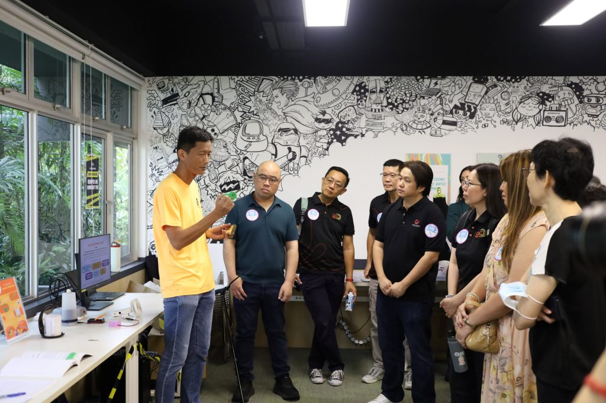
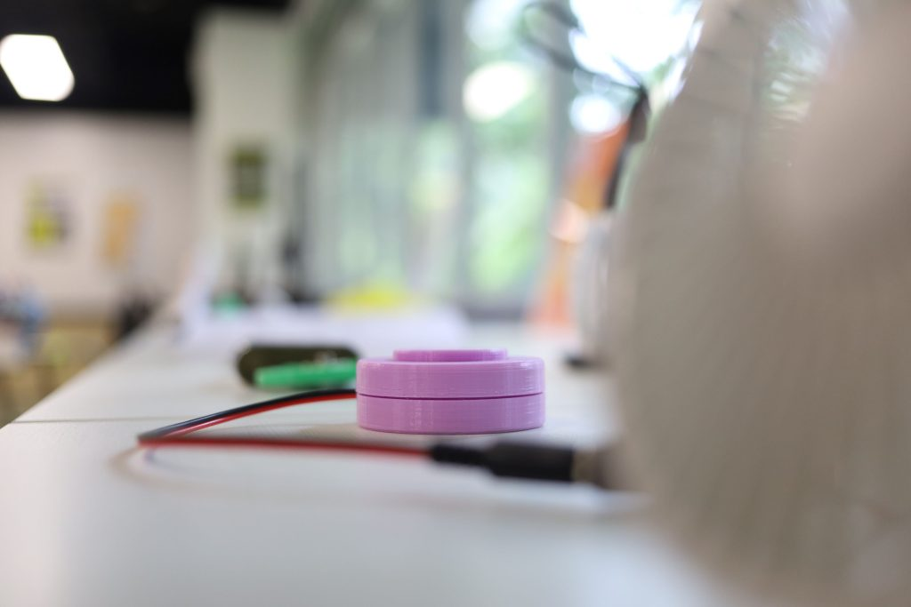
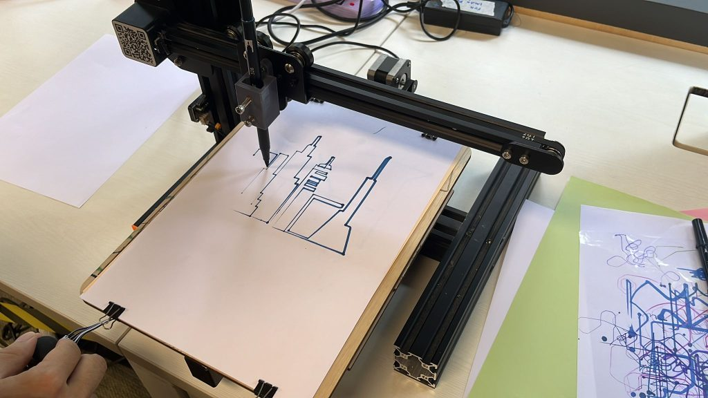
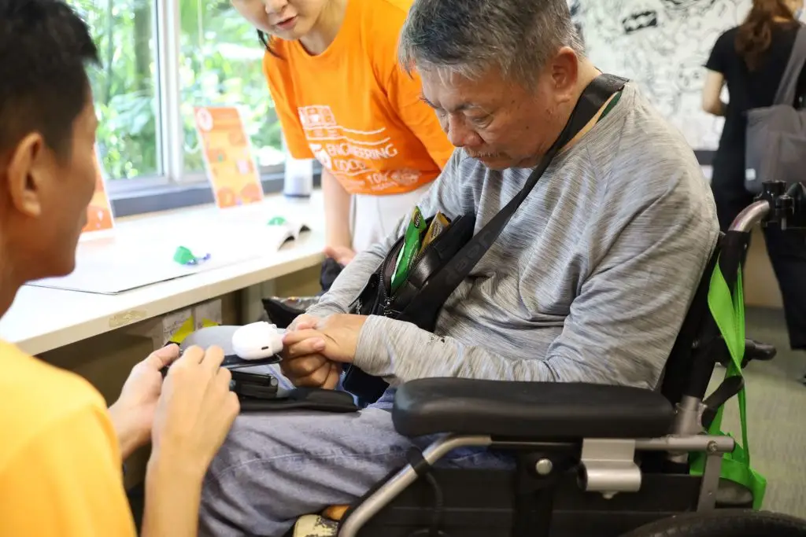
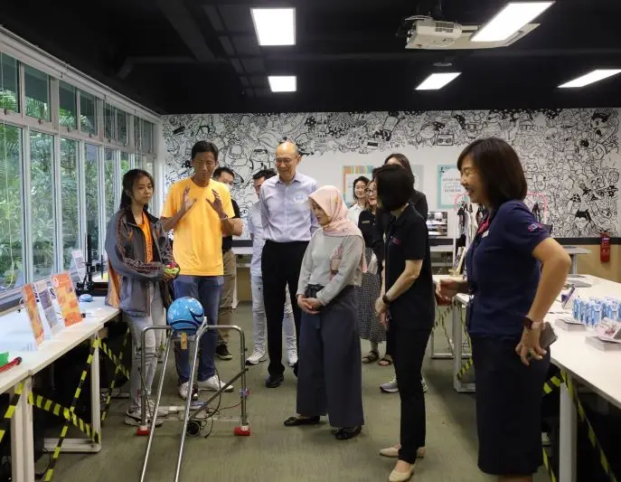
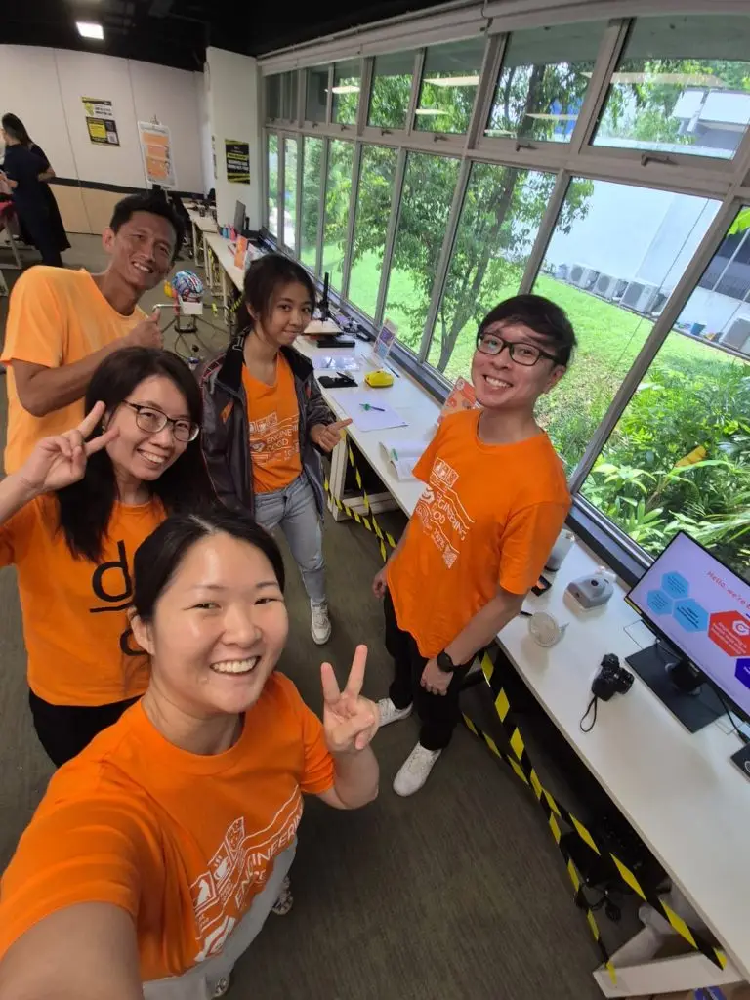

Engineering Good showcased our range of Assistive Tech at the Stroke Support Station (S3) World Stroke Day Open House held at Enabling Village. People who experienced a stroke often find their lives changed. Actions that we take for granted may often be impossible for a stroke survivor. So, at Engineering Good, we put our heads and hearts together to develop solutions in hopes of bringing some sense of familiarity to users.

Many stroke survivors lose the ability to control one side of their body and fine motor movements. The Engineering Good team, together with our skilled volunteers, have designed and built a few assistive technology (AT) solutions that enable stroke survivors to regain these abilities to perform some daily living and leisure activities.
We brought a library of 3D printed things, and things that were put together from other things, and things that required much thinking to be assembled, putting everything to show visitors that post-stroke survivors can still perform many things they used to do, with AT support.

Throughout the day, visitors streamed in to learn about our AT prototypes and solutions. Engineering a solution need not necessarily result in a product involving a lot of tech. On the contrary, we think that elegant solutions often result in the most simplest of things. Furthermore, we are huge fans of not reinventing the wheel. Adapting an off-the-shelf product and integrating it to something else may be sufficient to birth a solution that just meets the needs of users.

One of the stroke survivor visitors trying out a cup holder designed to prevent spillage even if the user walks unsteadily and swings the drink about.
He was visibly delighted and commented that it is the first time since his stroke that he is confident to hold a drink with his affected hand and walk.
Assistive tech solutions such as this cup holder empower stroke survivors to regain some independence in performing various activities of daily living.

It was a humbling experience for not only the visitors, but the team as well, to learn of the lived experiences of stroke survivors.

